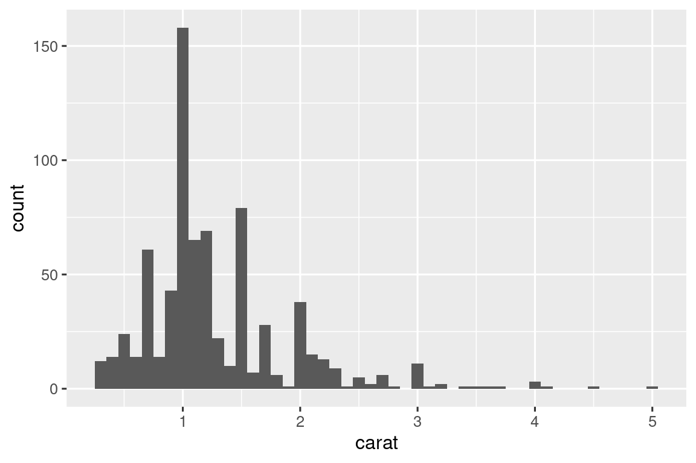

26 Επανάληψη
26.1 Εισαγωγή
Σε αυτό το κεφάλαιο, θα μάθετε εργαλεία σχετικά με την επανάληψη, εκτελώντας επανειλημμένα την ίδια ενέργεια σε διαφορετικά αντικείμενα. Γενικά, η επανάληψη στην R φαίνεται διαφορετική από άλλες γλώσσες προγραμματισμού, επειδή μεγάλο μέρος της εκτελείται έμμεσα οπότε, κάθε φορά το έχουμε έτοιμο. Για παράδειγμα, εάν θέλετε να διπλασιάσετε ένα αριθμητικό διάνυσμα x στην R, μπορείτε απλώς να γράψετε 2 * x. Στην πλειοψηφία των άλλων γλωσσών, θα χρειαστεί να γράψετε και το κομμάτι του κώδικα για να διπλασιάσετε κάθε στοιχείο του x χρησιμοποιώντας κάποιου είδους βρόγχο for.
Το βιβλίο αυτό σας έχει ήδη δώσει έναν μικρό αλλά ισχυρό αριθμό εργαλείων που εκτελούν την ίδια ενέργεια για πολλά “πράγματα”:
- Την
facet_wrap()και τηνfacet_grid()που σχεδιάζουν ένα διάγραμμα για κάθε υποσύνολο. - Την
group_by()μαζί με τηνsummarize()που υπολογίζουν συνοπτικά στατιστικά στοιχεία για κάθε υποσύνολο. - Την
unnest_wider()και τηνunnest_longer()που δημιουργούν νέες γραμμές και στήλες για κάθε στοιχείο μιας στήλης ή λίστας.
Τώρα, ήρθε η ώρα να μάθετε μερικά πιο γενικά εργαλεία που συχνά ονομάζονται εργαλεία συναρτησιακού προγραμματισμού επειδή είναι χτισμένα γύρω από συναρτήσεις που λαμβάνουν ως είσοδο άλλες συναρτήσεις. Η εκμάθηση συναρτησιακού προγραμματισμού μπορεί εύκολα να εκτραπεί σε γενικές και ασαφής έννοιες, αλλά σε αυτό το κεφάλαιο θα διατηρήσουμε μία συγκεκριμένη κατεύθυνση εστιάζοντας σε τρεις κοινές εργασίες: τροποποίηση πολλαπλών στηλών, ανάγνωση πολλαπλών αρχείων και αποθήκευση πολλαπλών αντικειμένων.
26.1.1 Προαπαιτούμενα
Σε αυτό το κεφάλαιο, θα επικεντρωθούμε στα εργαλεία που παρέχονται από το πακέτο dplyr και το πακέτο purrr, δύο βασικά μέλη του tidyverse. Έχετε δει το πακέτο dplyr στο παρελθόν, αλλά όχι το purrr. Θα χρησιμοποιήσουμε απλώς μερικές συναρτήσεις του purrr σε αυτό το κεφάλαιο, αλλά γενικά είναι ένα εξαιρετικό πακέτο για να εξερευνήσετε καθώς βελτιώνετε τις προγραμματιστικές σας ικανότητες.
26.2 Τροποποίηση πολλαπλών στηλών
Φανταστείτε ότι έχετε αυτό το απλό tibble και θέλετε να μετρήσετε τον αριθμό των παρατηρήσεων και να υπολογίσετε τη διάμεσο κάθε στήλης.
Θα μπορούσατε να το κάνετε με αντιγραφή-επικόλληση:
Αυτό παραβιάζει τον εμπειρικό μας κανόνα που λέει να μην εφαρμόζεται αντιγραφή και επικόλληση περισσότερες από δύο φορές. Μπορείτε, ακόμα, να φανταστείτε ότι αυτό γίνεται πολύ κουραστικό αν έχετε δεκάδες ή και εκατοντάδες στήλες. Αντίθετα, μπορείτε να χρησιμοποιήσετε την across():
Η across() έχει τρία ιδιαίτερα σημαντικά ορίσματα τα οποία θα συζητήσουμε λεπτομερώς στις επόμενες ενότητες. Θα χρησιμοποιείτε τα δύο πρώτα κάθε φορά που χρησιμοποιείτε την across(): το πρώτο όρισμα, .cols, καθορίζει ποιες στήλες θέλετε να επαναλάβετε και το δεύτερο όρισμα, .fns, καθορίζει το τι θα εφαρμόσετε σε κάθε στήλη. Μπορείτε να χρησιμοποιήσετε το όρισμα .names όταν χρειάζεστε έναν επιπλέον έλεγχο στα ονόματα των στηλών εξόδου, κάτι που είναι ιδιαίτερα σημαντικό όταν χρησιμοποιείτε την across() με την mutate(). Θα συζητήσουμε επίσης δύο σημαντικές παραλλαγές, τις if_any() και if_all(), οι οποίες λειτουργούν μέσα στη filter().
26.2.1 Επιλογή στηλών με .cols
Το πρώτο όρισμα στην across(), το .cols, επιλέγει τις στήλες προς επεξεργασία. Χρησιμοποιεί τις ίδιες προδιαγραφές με την select(), Ενότητα 3.3.2, ώστε να μπορείτε να χρησιμοποιήσετε συναρτήσεις όπως την starts_with() και την ends_with() για να επιλέξετε στήλες με βάση το όνομά τους.
Υπάρχουν δύο πρόσθετες τεχνικές επιλογής που είναι ιδιαίτερα χρήσιμες για την across(): οι everything() και where(). Η everything() είναι απλή: επιλέγει κάθε στήλη (που δεν χρησιμοποιείται για ομαδοποίηση):
df <- tibble(
grp = sample(2, 10, replace = TRUE),
a = rnorm(10),
b = rnorm(10),
c = rnorm(10),
d = rnorm(10)
)
df |>
group_by(grp) |>
summarize(across(everything(), median))
#> # A tibble: 2 × 5
#> grp a b c d
#> <int> <dbl> <dbl> <dbl> <dbl>
#> 1 1 -0.0935 -0.0163 0.363 0.364
#> 2 2 0.312 -0.0576 0.208 0.565Παρατηρήστε ότι οι στήλες που χρησιμοποιούνται για ομαδοποίηση (εδώ, η grp) δεν περιλαμβάνονται στην across() επειδή διατηρούνται αυτόματα από την summarize().
Η where() σας επιτρέπει να επιλέξετε στήλες με βάση τον τύπο τους:
- Η
where(is.numeric)επιλέγει όλες τις αριθμητικές στήλες. - Η
where(is.character)επιλέγει όλες τις στήλες συμβολοσειρών. - Η
where(is.Date)επιλέγει όλες τις στήλες ημερομηνίας. - Η
where(is.POSIXct)επιλέγει όλες τις στήλες ημερομηνίας-ώρας. - Η
where(is.logical)επιλέγει όλες τις λογικές στήλες.
Όπως και σε άλλες συναρτήσεις επιλογής στηλών, μπορείτε να συνδυάσετε τα παραπάνω με άλγεβρα Boole. Για παράδειγμα, η !where(is.numeric) επιλέγει όλες τις μη αριθμητικές στήλες και ο συνδυασμός starts_with("a") & where(is.logical) επιλέγει όλες τις λογικές στήλες των οποίων το όνομα αρχίζει με “a”.
26.2.2 Κλήση μιας μεμονωμένης συνάρτησης
Το δεύτερο όρισμα της across() ορίζει πώς θα μετασχηματιστεί κάθε στήλη. Σε απλές περιπτώσεις, όπως παραπάνω, το όρισμα θα είναι μία υπάρχουσα συνάρτηση. Αυτό αποκαλύπτει ένα ιδιαίτερο χαρακτηριστικό της R: μπορούμε να τοποθετήσουμε μία συνάρτηση (median, mean, str_flatten, …) μέσα σε μία άλλη συνάρτηση (across). Λειτουργίες σαν και αυτή καθιστούν την R μια συναρτησιακή γλώσσα προγραμματισμού.
Είναι σημαντικό να σημειωθεί ότι τοποθετούμε τη συνάρτηση ως όρισμα στην across(), έτσι ώστε η across() να μπορεί να την καλέσει. Δεν την καλούμε εμείς. Αυτό σημαίνει ότι το όνομα της συνάρτησης δεν πρέπει ποτέ να ακολουθείται από (). Εάν ξεχαστείτε, θα λάβετε ένα σφάλμα:
df |>
group_by(grp) |>
summarize(across(everything(), median()))
#> Error in `summarize()`:
#> ℹ In argument: `across(everything(), median())`.
#> Caused by error in `median.default()`:
#> ! argument "x" is missing, with no defaultΑυτό το σφάλμα προκύπτει επειδή καλείτε τη συνάρτηση χωρίς κάποιο όρισμα ως είσοδο, π.χ.
median()
#> Error in median.default(): argument "x" is missing, with no default26.2.3 Κλήση πολλαπλών συναρτήσεων
Σε πιο περίπλοκες περιπτώσεις, μπορεί να θέλετε να προσθέσετε ορίσματα ή να εφαρμόσετε πολλαπλούς μετασχηματισμούς. Ας εξηγήσουμε το παρασκήνιο αυτού του προβλήματος με ένα απλό παράδειγμα: τι θα συμβεί εάν λείπουν κάποιες τιμές στα δεδομένα μας; Η median() επηρεάζεται από τις κενές τιμές, δίνοντάς μας ένα όχι και τόσο καλό αποτέλεσμα:
rnorm_na <- function(n, n_na, mean = 0, sd = 1) {
sample(c(rnorm(n - n_na, mean = mean, sd = sd), rep(NA, n_na)))
}
df_miss <- tibble(
a = rnorm_na(5, 1),
b = rnorm_na(5, 1),
c = rnorm_na(5, 2),
d = rnorm(5)
)
df_miss |>
summarize(
across(a:d, median),
n = n()
)
#> # A tibble: 1 × 5
#> a b c d n
#> <dbl> <dbl> <dbl> <dbl> <int>
#> 1 NA NA NA 1.15 5Θα ήταν ωραίο εάν μπορούσαμε να προσθέσουμε το όρισμα na.rm = TRUE στη median() για να αφαιρέσουμε τις κενές τιμές. Για να το κάνουμε, αντί να καλέσουμε απευθείας τη median(), πρέπει να δημιουργήσουμε μία νέα συνάρτηση που καλεί τη median() με τα ορίσματα που θέλουμε:
Ο νέος τρόπος παραπάνω είναι κάπως μακροσκελής και για αυτό η R περιέχει μία εύχρηστη συντόμευση: σε περιπτώσεις κώδικα με εικονικές, ή ανώνυμες συναρτήσεις1, μπορείτε να αντικαταστήσετε το κομμάτι function με το \2:
Σε κάθε περίπτωση, η across() αναπτύσσεται αποτελεσματικά στον ακόλουθο κώδικα:
Όταν αφαιρούμε τις κενές τιμές από τη median(), θα ήταν ωραίο να γνωρίζουμε και πόσες τιμές αφαιρέθηκαν. Μπορούμε να το ανακαλύψουμε παρέχοντας δύο συναρτήσεις στην across(): μία για τον υπολογισμό της διάμεσης τιμής και άλλη μία για την καταμέτρηση των κενών τιμών. H παροχή πολλαπλών συναρτήσεων γίνεται χρησιμοποιώντας μία λίστα με ονόματα στα στοιχεία της στο όρισμα .fns:
df_miss |>
summarize(
across(a:d, list(
median = \(x) median(x, na.rm = TRUE),
n_miss = \(x) sum(is.na(x))
)),
n = n()
)
#> # A tibble: 1 × 9
#> a_median a_n_miss b_median b_n_miss c_median c_n_miss d_median d_n_miss
#> <dbl> <int> <dbl> <int> <dbl> <int> <dbl> <int>
#> 1 0.139 1 -1.11 1 -0.387 2 1.15 0
#> # ℹ 1 more variable: n <int>Αν παρατηρήσετε προσεκτικά, ίσως καταλάβετε ότι οι στήλες ονομάζονται χρησιμοποιώντας μία προδιαγραφή ένωσης (Ενότητα 14.3.2) όπως η {.col}_{.fn}. Όπου .col είναι το όνομα της αρχικής στήλης και . fn είναι το όνομα της συνάρτησης. Δεν είναι τυχαίο! Όπως θα μάθετε στην επόμενη ενότητα, μπορείτε να χρησιμοποιήσετε το όρισμα .names για να παρέχετε μία ένωση με βάση τις δικές σας προδιαγραφές.
26.2.4 Ονόματα στηλών
Το αποτέλεσμα της across() ονομάζεται σύμφωνα με τις προδιαγραφές που παρέχονται στο όρισμα .names. Θα μπορούσαμε να καθορίσουμε το δικό μας, αν θέλαμε το όνομα της συνάρτησης να εμφανίζεται πρώτο3:
df_miss |>
summarize(
across(
a:d,
list(
median = \(x) median(x, na.rm = TRUE),
n_miss = \(x) sum(is.na(x))
),
.names = "{.fn}_{.col}"
),
n = n(),
)
#> # A tibble: 1 × 9
#> median_a n_miss_a median_b n_miss_b median_c n_miss_c median_d n_miss_d
#> <dbl> <int> <dbl> <int> <dbl> <int> <dbl> <int>
#> 1 0.139 1 -1.11 1 -0.387 2 1.15 0
#> # ℹ 1 more variable: n <int>Το όρισμα .names είναι ιδιαίτερα σημαντικό όταν χρησιμοποιείτε την across() με την mutate(). Από προεπιλογή, η έξοδος της across() έχει τα ίδια ονόματα με τις εισόδους. Αυτό σημαίνει ότι η across() μέσα στη mutate() θα αντικαταστήσει τις υπάρχουσες στήλες. Για παράδειγμα, εδώ χρησιμοποιούμε την coalesce() για να αντικαταστήσουμε τα NA με 0:
Σε περίπτωση που θέλετε να δημιουργήσετε νέες στήλες, μπορείτε να χρησιμοποιήσετε το όρισμα .names για να δώσετε στην έξοδο νέα ονόματα:
df_miss |>
mutate(
across(a:d, \(x) coalesce(x, 0), .names = "{.col}_na_zero")
)
#> # A tibble: 5 × 8
#> a b c d a_na_zero b_na_zero c_na_zero d_na_zero
#> <dbl> <dbl> <dbl> <dbl> <dbl> <dbl> <dbl> <dbl>
#> 1 0.434 -1.25 NA 1.60 0.434 -1.25 0 1.60
#> 2 NA -1.43 -0.297 0.776 0 -1.43 -0.297 0.776
#> 3 -0.156 -0.980 NA 1.15 -0.156 -0.980 0 1.15
#> 4 -2.61 -0.683 -0.785 2.13 -2.61 -0.683 -0.785 2.13
#> 5 1.11 NA -0.387 0.704 1.11 0 -0.387 0.70426.2.5 Φιλτράρισμα
Η across() ταιριάζει αρκετά μέσα στην summarize() και στην mutate(). Η χρήση της όμως με την filter() είναι πιο άβολη, επειδή συνήθως πρέπει να συνδυάσετε πολλαπλές συνθήκες με τους τελεστές | και &. Είναι σαφές ότι η across() μπορεί να βοηθήσει στη δημιουργία πολλαπλών στηλών λογικού τύπου, αλλά μετά τι; Για αυτό, το πακέτο dplyr προσφέρει δύο παραλλαγές της across() που ονομάζονται if_any() και if_all():
# ίδιο με το df_miss |> filter(is.na(a) | is.na(b) | is.na(c) | is.na(d))
df_miss |> filter(if_any(a:d, is.na))
#> # A tibble: 4 × 4
#> a b c d
#> <dbl> <dbl> <dbl> <dbl>
#> 1 0.434 -1.25 NA 1.60
#> 2 NA -1.43 -0.297 0.776
#> 3 -0.156 -0.980 NA 1.15
#> 4 1.11 NA -0.387 0.704
# ίδιο με το df_miss |> filter(is.na(a) & is.na(b) & is.na(c) & is.na(d))
df_miss |> filter(if_all(a:d, is.na))
#> # A tibble: 0 × 4
#> # ℹ 4 variables: a <dbl>, b <dbl>, c <dbl>, d <dbl>
26.2.6 Η across() σε συναρτήσεις
Η across() είναι ιδιαίτερα χρήσιμη γιατί σας επιτρέπει να λειτουργείτε σε πολλαπλές στήλες. Για παράδειγμα, ο Jacob Scott χρησιμοποιεί τη μικρή βοηθητική συνάρτηση η οποία περιλαμβάνει μία ομάδα συναρτήσεων του πακέτου lubridate για να επεκτείνει όλες τις στήλες ημερομηνίας σε ξεχωριστές στήλες έτους, μήνα και ημέρας:
expand_dates <- function(df) {
df |>
mutate(
across(where(is.Date), list(year = year, month = month, day = mday))
)
}
df_date <- tibble(
name = c("Amy", "Bob"),
date = ymd(c("2009-08-03", "2010-01-16"))
)
df_date |>
expand_dates()
#> # A tibble: 2 × 5
#> name date date_year date_month date_day
#> <chr> <date> <dbl> <dbl> <int>
#> 1 Amy 2009-08-03 2009 8 3
#> 2 Bob 2010-01-16 2010 1 16Η across() διευκολύνει επίσης την παροχή πολλών στηλών σε ένα μόνο όρισμα επειδή το πρώτο όρισμα χρησιμοποιεί tidy-select. Απλά πρέπει να θυμάστε να ενθυλακώσετε αυτό το όρισμα, όπως συζητήσαμε στην Ενότητα 25.3.2. Για παράδειγμα, αυτή η συνάρτηση θα υπολογίσει τους μέσους όρους των αριθμητικών στηλών από προεπιλογή. Ωστόσο, παρέχοντας το δεύτερο όρισμα, μπορείτε να επιλέξετε να συνοψίσετε μόνο στήλες που θα επιλέξετε:
summarize_means <- function(df, summary_vars = where(is.numeric)) {
df |>
summarize(
across({{ summary_vars }}, \(x) mean(x, na.rm = TRUE)),
n = n(),
.groups = "drop"
)
}
diamonds |>
group_by(cut) |>
summarize_means()
#> # A tibble: 5 × 9
#> cut carat depth table price x y z n
#> <ord> <dbl> <dbl> <dbl> <dbl> <dbl> <dbl> <dbl> <int>
#> 1 Fair 1.05 64.0 59.1 4359. 6.25 6.18 3.98 1610
#> 2 Good 0.849 62.4 58.7 3929. 5.84 5.85 3.64 4906
#> 3 Very Good 0.806 61.8 58.0 3982. 5.74 5.77 3.56 12082
#> 4 Premium 0.892 61.3 58.7 4584. 5.97 5.94 3.65 13791
#> 5 Ideal 0.703 61.7 56.0 3458. 5.51 5.52 3.40 21551
diamonds |>
group_by(cut) |>
summarize_means(c(carat, x:z))
#> # A tibble: 5 × 6
#> cut carat x y z n
#> <ord> <dbl> <dbl> <dbl> <dbl> <int>
#> 1 Fair 1.05 6.25 6.18 3.98 1610
#> 2 Good 0.849 5.84 5.85 3.64 4906
#> 3 Very Good 0.806 5.74 5.77 3.56 12082
#> 4 Premium 0.892 5.97 5.94 3.65 13791
#> 5 Ideal 0.703 5.51 5.52 3.40 21551
26.2.7 Περί pivot_longer()
Πριν συνεχίσουμε, αξίζει να επισημάνουμε μία ενδιαφέρουσα σύνδεση μεταξύ της across() και της pivot_longer() (Ενότητα 5.3). Σε πολλές περιπτώσεις, εκτελείτε τους ίδιους υπολογισμούς συγκεντρώνοντας πρώτα τα δεδομένα και στη συνέχεια εκτελώντας τους υπολογισμούς ανά ομάδα και όχι ανά στήλη. Για παράδειγμα, δείτε αυτήν τη σύνοψη ως αποτέλεσμα πολλαπλών συναρτήσεων:
Θα μπορούσαμε να υπολογίσουμε τις ίδιες τιμές συγκεντρώνοντας τα δεδομένα σε ύψος (pivot longer) και στη συνέχεια να συνοψίσουμε:
long <- df |>
pivot_longer(a:d) |>
group_by(name) |>
summarize(
median = median(value),
mean = mean(value)
)
long
#> # A tibble: 4 × 3
#> name median mean
#> <chr> <dbl> <dbl>
#> 1 a 0.0380 0.205
#> 2 b -0.0163 0.0910
#> 3 c 0.260 0.0716
#> 4 d 0.540 0.508Και αν θέλατε την ίδια δομή με την across(), θα μπορούσατε να συγκεντρώσετε ξανά σε πλάτος:
long |>
pivot_wider(
names_from = name,
values_from = c(median, mean),
names_vary = "slowest",
names_glue = "{name}_{.value}"
)
#> # A tibble: 1 × 8
#> a_median a_mean b_median b_mean c_median c_mean d_median d_mean
#> <dbl> <dbl> <dbl> <dbl> <dbl> <dbl> <dbl> <dbl>
#> 1 0.0380 0.205 -0.0163 0.0910 0.260 0.0716 0.540 0.508Είναι καλό να γνωρίζετε την παραπάνω τεχνική καθώς μερικές φορές μπορεί να αντιμετωπίσετε ένα πρόβλημα το οποίο δεν μπορεί, για την ώρα, να λυθεί χρησιμοποιώντας την across(): όταν έχετε ομάδες στηλών τις οποίες θέλετε να χρησιμοποιήσετε ταυτόχρονα σε υπολογισμούς. Για παράδειγμα, φανταστείτε ότι το πλαίσιο δεδομένων μας περιέχει και τιμές και βάρη και θέλουμε να υπολογίσουμε έναν σταθμισμένο μέσο όρο:
Δεν υπάρχει τρόπος, προς το παρόν, αυτό να γίνει με την across()4, είναι όμως σχετικά απλό με την pivot_longer():
df_long <- df_paired |>
pivot_longer(
everything(),
names_to = c("group", ".value"),
names_sep = "_"
)
df_long
#> # A tibble: 40 × 3
#> group val wts
#> <chr> <dbl> <dbl>
#> 1 a 0.715 0.518
#> 2 b -0.709 0.691
#> 3 c 0.718 0.216
#> 4 d -0.217 0.733
#> 5 a -1.09 0.979
#> 6 b -0.209 0.675
#> # ℹ 34 more rows
df_long |>
group_by(group) |>
summarize(mean = weighted.mean(val, wts))
#> # A tibble: 4 × 2
#> group mean
#> <chr> <dbl>
#> 1 a 0.126
#> 2 b -0.0704
#> 3 c -0.360
#> 4 d -0.248Εάν χρειαστεί, μπορείτε να χρησιμοποιήσετε την pivot_wider() για να επιστρέψετε στην αρχική μορφή των δεδομένων.
26.2.8 Ασκήσεις
-
Εξασκήστε τις δεξιότητές σας στην
across():Υπολογίζοντας του αριθμού των μοναδικών τιμών σε κάθε στήλη του συνόλου δεδομένων
palmerpenguins::penguins.Υπολογίζοντας τον μέσο όρο κάθε στήλης στο σύνολο δεδομένων
mtcars.Ομαδοποιώντας, στο σύνολο δεδομένων
diamonds, ανάcut,clarity, καιcolorκαι στη συνέχεια μετρώντας τον αριθμό των παρατηρήσεων και υπολογίζοντας τον μέσο όρο κάθε αριθμητικής στήλης.
Τι συμβαίνει εάν χρησιμοποιήσετε μία λίστα συναρτήσεων στην
across(), αλλά δεν τις ονομάσετε; Τι όνομα εμφανίζεται στην έξοδο;Προσαρμόστε την
expand_dates()για να αφαιρέσετε αυτόματα τις στήλες ημερομηνίας μετά την επέκτασή τους. Χρειάζεται να ενθυλακώσετε κάποια επιχειρήματα;-
Εξηγήστε τι κάνει κάθε βήμα σε αυτή τη συνάρτηση. Ποιο ιδιαίτερο χαρακτηριστικό της
where()εκμεταλλευόμαστε εδώ;
26.3 Ανάγνωση πολλαπλών αρχείων
Στην προηγούμενη ενότητα μάθατε πώς να χρησιμοποιείτε την dplyr::across() για να επαναλάβετε έναν μετασχηματισμό σε πολλαπλές στήλες. Σε αυτήν την ενότητα θα μάθετε πώς να χρησιμοποιείτε την purrr::map() για να εφαρμόσετε οτιδήποτε σε κάθε αρχείο ενός καταλόγου. Ας ξεκινήσουμε με ένα παράδειγμα: φανταστείτε ότι έχετε έναν φάκελο γεμάτο αρχεία excel5 που θέλετε να διαβάσετε. Μπορείτε να το κάνετε με αντιγραφή και επικόλληση για κάθε ένα αρχείο:
data2019 <- readxl::read_excel("data/y2019.xlsx")
data2020 <- readxl::read_excel("data/y2020.xlsx")
data2021 <- readxl::read_excel("data/y2021.xlsx")
data2022 <- readxl::read_excel("data/y2022.xlsx")Και μετά να χρησιμοποιήσετε την dplyr::bind_rows() για να τα συνδυάσετε όλα μαζί:
data <- bind_rows(data2019, data2020, data2021, data2022)Μπορείτε να φανταστείτε ότι αυτό θα γινόταν κουραστικό αρκετά γρήγορα, ειδικά αν είχατε εκατοντάδες αρχεία, όχι μόνο τέσσερα. Οι επόμενες ενότητες σας δείχνουν πώς να αυτοματοποιήσετε αυτού του είδους την εργασία. Υπάρχουν τρία βασικά βήματα: χρησιμοποιήστε την list.files() για να απαριθμήσετε όλα τα αρχεία σε έναν κατάλογο, στη συνέχεια χρησιμοποιήστε την purrr::map() για να διαβάσετε το καθένα από αυτά σε μία λίστα, και στη συνέχεια χρησιμοποιήστε την purrr::list_rbind() για να τα συνδυάσετε σε ένα ενιαίο πλαίσιο δεδομένων. Θα συζητήσουμε στη συνέχεια πώς μπορείτε να χειριστείτε καταστάσεις όπου η ετερογένεια αυξάνεται, όπου δεν μπορείτε να κάνετε ακριβώς το ίδιο πράγμα σε κάθε αρχείο.
26.3.1 Καταγραφή αρχείων σε έναν κατάλογο
Όπως προτείνει και το όνομα, η list.files() καταγράφει (lists) τα αρχεία σε έναν κατάλογο. Σχεδόν πάντα θα χρησιμοποιείτε τρία ορίσματα:
Το πρώτο όρισμα,
path, είναι ο κατάλογος που θα αναζητήσετε τα αρχεία.Το
patternείναι μία κανονική έκφραση που χρησιμοποιείται για να φιλτράρει τα ονόματα των αρχείων. Το πιο κοινό μοτίβο είναι κάτι σαν[.]xlsx$ή[.]csv$για να βρείτε όλα τα αρχεία με μία συγκεκριμένη κατάληξη.Το
full.namesκαθορίζει εάν το όνομα του καταλόγου πρέπει να συμπεριληφθεί στην έξοδο ή όχι. Σχεδόν πάντα θέλετε να είναιTRUE.
Για να κάνουμε το παράδειγμά μας συγκεκριμένο, αυτό το βιβλίο περιέχει έναν φάκελο με 12 αρχεία Excel που περιέχουν δεδομένα από το πακέτο gapminder. Κάθε αρχείο περιέχει δεδομένα ενός έτους για 142 χώρες. Μπορούμε να τα καταγράψουμε όλα με την κατάλληλη κλήση στην list.files():
paths <- list.files("data/gapminder", pattern = "[.]xlsx$", full.names = TRUE)
paths
#> [1] "data/gapminder/1952.xlsx" "data/gapminder/1957.xlsx"
#> [3] "data/gapminder/1962.xlsx" "data/gapminder/1967.xlsx"
#> [5] "data/gapminder/1972.xlsx" "data/gapminder/1977.xlsx"
#> [7] "data/gapminder/1982.xlsx" "data/gapminder/1987.xlsx"
#> [9] "data/gapminder/1992.xlsx" "data/gapminder/1997.xlsx"
#> [11] "data/gapminder/2002.xlsx" "data/gapminder/2007.xlsx"26.3.2 Λίστες
Τώρα που έχουμε αυτές τα 12 μονοπάτια, θα μπορούσαμε να καλέσουμε τη read_excel() 12 φορές για να λάβουμε 12 πλαίσια δεδομένων:
gapminder_1952 <- readxl::read_excel("data/gapminder/1952.xlsx")
gapminder_1957 <- readxl::read_excel("data/gapminder/1957.xlsx")
gapminder_1962 <- readxl::read_excel("data/gapminder/1962.xlsx")
...,
gapminder_2007 <- readxl::read_excel("data/gapminder/2007.xlsx")Η τοποθέτηση κάθε αρχείου Excel στη δική του μεταβλητή θα κάνει τη διαχείρισή τους δύσκολη σε λίγα βήματα πιο κάτω. Αντίθετα, θα είναι πιο εύκολο εάν τα τοποθετήσουμε σε ένα μόνο αντικείμενο. Μία λίστα είναι το τέλειο εργαλείο για αυτή τη δουλειά:
files <- list(
readxl::read_excel("data/gapminder/1952.xlsx"),
readxl::read_excel("data/gapminder/1957.xlsx"),
readxl::read_excel("data/gapminder/1962.xlsx"),
...,
readxl::read_excel("data/gapminder/2007.xlsx")
)Τώρα που έχετε αυτά τα πλαίσια δεδομένων σε μία λίστα, πώς μπορείτε να βγάλετε ένα από αυτή; Μπορείτε να χρησιμοποιήσετε την files[[i]] για να εξάγετε το iοστο στοιχείο:
files[[3]]
#> # A tibble: 142 × 5
#> country continent lifeExp pop gdpPercap
#> <chr> <chr> <dbl> <dbl> <dbl>
#> 1 Afghanistan Asia 32.0 10267083 853.
#> 2 Albania Europe 64.8 1728137 2313.
#> 3 Algeria Africa 48.3 11000948 2551.
#> 4 Angola Africa 34 4826015 4269.
#> 5 Argentina Americas 65.1 21283783 7133.
#> 6 Australia Oceania 70.9 10794968 12217.
#> # ℹ 136 more rowsΘα επανέλθουμε στο [[ με περισσότερες λεπτομέρειες στην Ενότητα 27.3.
26.3.3 purrr::map() και list_rbind()
Ο κώδικας για να συλλέξετε αυτά τα πλαίσια δεδομένων σε μία λίστα “με το χέρι” είναι εξίσου κουραστικός στην πληκτρολόγηση όσο με τον κώδικα που διαβάζει τα αρχεία ένα ένα. Ευτυχώς, μπορούμε να χρησιμοποιήσουμε τη purrr::map() για να χρησιμοποιήσουμε με ακόμα καλύτερο τρόπο το διάνυσμα paths. Η map() είναι παρόμοια με την across(), αλλά αντί να εφαρμόζει κάτι σε κάθε στήλη μέσα σε ένα πλαίσιο δεδομένων, εφαρμόζει κάτι σε κάθε στοιχείο ενός διανύσματος. Η map(x, f) είναι συντομογραφία για:
list(
f(x[[1]]),
f(x[[2]]),
...,
f(x[[n]])
)Μπορούμε λοιπόν να χρησιμοποιήσουμε τη map() για να πάρουμε μία λίστα με 12 πλαίσια δεδομένων:
files <- map(paths, readxl::read_excel)
length(files)
#> [1] 12
files[[1]]
#> # A tibble: 142 × 5
#> country continent lifeExp pop gdpPercap
#> <chr> <chr> <dbl> <dbl> <dbl>
#> 1 Afghanistan Asia 28.8 8425333 779.
#> 2 Albania Europe 55.2 1282697 1601.
#> 3 Algeria Africa 43.1 9279525 2449.
#> 4 Angola Africa 30.0 4232095 3521.
#> 5 Argentina Americas 62.5 17876956 5911.
#> 6 Australia Oceania 69.1 8691212 10040.
#> # ℹ 136 more rows(Αυτή είναι μία άλλη δομή δεδομένων που δεν εμφανίζεται ιδιαίτερα συμπαγής χρησιμοποιώντας την str(), επομένως ίσως θέλετε να τη φορτώσετε στο RStudio και να την επιθεωρήσετε με την View()).
Τώρα μπορούμε να χρησιμοποιήσουμε την purrr::list_rbind() για να συνδυάσουμε αυτήν τη λίστα πλαισίων δεδομένων σε ένα ενιαίο πλαίσιο δεδομένων:
list_rbind(files)
#> # A tibble: 1,704 × 5
#> country continent lifeExp pop gdpPercap
#> <chr> <chr> <dbl> <dbl> <dbl>
#> 1 Afghanistan Asia 28.8 8425333 779.
#> 2 Albania Europe 55.2 1282697 1601.
#> 3 Algeria Africa 43.1 9279525 2449.
#> 4 Angola Africa 30.0 4232095 3521.
#> 5 Argentina Americas 62.5 17876956 5911.
#> 6 Australia Oceania 69.1 8691212 10040.
#> # ℹ 1,698 more rowsΉ θα μπορούσαμε να κάνουμε και τα δύο βήματα ταυτόχρονα σε μία διαδικασία με τον τελεστή pipe:
paths |>
map(readxl::read_excel) |>
list_rbind()Τι γίνεται αν θέλουμε να προσθέσουμε ορίσματα στη read_excel(); Χρησιμοποιούμε την ίδια τεχνική που χρησιμοποιήσαμε με την across(). Για παράδειγμα, είναι συχνά χρήσιμο να βλέπουμε τις πρώτες γραμμές των δεδομένων με το όρισμα n_max = 1:
paths |>
map(\(path) readxl::read_excel(path, n_max = 1)) |>
list_rbind()
#> # A tibble: 12 × 5
#> country continent lifeExp pop gdpPercap
#> <chr> <chr> <dbl> <dbl> <dbl>
#> 1 Afghanistan Asia 28.8 8425333 779.
#> 2 Afghanistan Asia 30.3 9240934 821.
#> 3 Afghanistan Asia 32.0 10267083 853.
#> 4 Afghanistan Asia 34.0 11537966 836.
#> 5 Afghanistan Asia 36.1 13079460 740.
#> 6 Afghanistan Asia 38.4 14880372 786.
#> # ℹ 6 more rowsΑυτό καθιστά σαφές ότι κάτι λείπει: δεν υπάρχει στήλη year, επειδή αυτή η τιμή καταγράφεται στο μονοπάτι και όχι στα μεμονωμένα αρχεία. Θα αντιμετωπίσουμε αυτό το πρόβλημα στη συνέχεια.
26.3.4 Δεδομένα στο μονοπάτι
Μερικές φορές το όνομα του αρχείου περιέχει και αυτό πληροφορία. Σε αυτό το παράδειγμα, το όνομα αρχείου περιέχει το έτος, το οποίο δεν καταγράφεται με άλλον τρόπο στα ξεχωριστά αρχεία. Για να μπει αυτή η στήλη στο τελικό πλαίσιο δεδομένων, πρέπει να κάνουμε δύο πράγματα:
Αρχικά, δίνουμε ένα όνομα στο διάνυσμα των μονοπατιών. Ο πιο εύκολος τρόπος για να γίνει αυτό είναι με τη συνάρτηση set_names(), η οποία μπορεί να λάβει μία συνάρτηση. Εδώ χρησιμοποιούμε τη basename() για να εξαγάγουμε μόνο το όνομα του αρχείου από το πλήρες μονοπάτι:
paths |> set_names(basename)
#> 1952.xlsx 1957.xlsx
#> "data/gapminder/1952.xlsx" "data/gapminder/1957.xlsx"
#> 1962.xlsx 1967.xlsx
#> "data/gapminder/1962.xlsx" "data/gapminder/1967.xlsx"
#> 1972.xlsx 1977.xlsx
#> "data/gapminder/1972.xlsx" "data/gapminder/1977.xlsx"
#> 1982.xlsx 1987.xlsx
#> "data/gapminder/1982.xlsx" "data/gapminder/1987.xlsx"
#> 1992.xlsx 1997.xlsx
#> "data/gapminder/1992.xlsx" "data/gapminder/1997.xlsx"
#> 2002.xlsx 2007.xlsx
#> "data/gapminder/2002.xlsx" "data/gapminder/2007.xlsx"Αυτά τα ονόματα μεταφέρονται αυτόματα από όλες τις λειτουργίες της map, επομένως η λίστα των πλαισίων δεδομένων θα έχει τα ίδια ονόματα:
files <- paths |>
set_names(basename) |>
map(readxl::read_excel)Ο παραπάνω κώδικας με τη κλήση της map(), είναι συντομογραφία για:
files <- list(
"1952.xlsx" = readxl::read_excel("data/gapminder/1952.xlsx"),
"1957.xlsx" = readxl::read_excel("data/gapminder/1957.xlsx"),
"1962.xlsx" = readxl::read_excel("data/gapminder/1962.xlsx"),
...,
"2007.xlsx" = readxl::read_excel("data/gapminder/2007.xlsx")
)Μπορείτε επίσης να χρησιμοποιήσετε το [[ για να εξάγετε στοιχεία ανά όνομα:
files[["1962.xlsx"]]
#> # A tibble: 142 × 5
#> country continent lifeExp pop gdpPercap
#> <chr> <chr> <dbl> <dbl> <dbl>
#> 1 Afghanistan Asia 32.0 10267083 853.
#> 2 Albania Europe 64.8 1728137 2313.
#> 3 Algeria Africa 48.3 11000948 2551.
#> 4 Angola Africa 34 4826015 4269.
#> 5 Argentina Americas 65.1 21283783 7133.
#> 6 Australia Oceania 70.9 10794968 12217.
#> # ℹ 136 more rowsΣτη συνέχεια, χρησιμοποιούμε το όρισμα names_to στη list_rbind() για να της πούμε να αποθηκεύσει τα ονόματα σε μία νέα στήλη που ονομάζεται year και στη συνέχεια χρησιμοποιούμε τη readr::parse_number() για να εξαγάγουμε τον αριθμό από το κείμενο.
paths |>
set_names(basename) |>
map(readxl::read_excel) |>
list_rbind(names_to = "year") |>
mutate(year = parse_number(year))
#> # A tibble: 1,704 × 6
#> year country continent lifeExp pop gdpPercap
#> <dbl> <chr> <chr> <dbl> <dbl> <dbl>
#> 1 1952 Afghanistan Asia 28.8 8425333 779.
#> 2 1952 Albania Europe 55.2 1282697 1601.
#> 3 1952 Algeria Africa 43.1 9279525 2449.
#> 4 1952 Angola Africa 30.0 4232095 3521.
#> 5 1952 Argentina Americas 62.5 17876956 5911.
#> 6 1952 Australia Oceania 69.1 8691212 10040.
#> # ℹ 1,698 more rowsΣε πιο περίπλοκες περιπτώσεις, μπορεί να υπάρχουν άλλες ήδη αποθηκευμένες μεταβλητές στο όνομα του καταλόγου ή ίσως το όνομα του αρχείου να περιέχει πολλά bit δεδομένων. Σε αυτήν την περίπτωση, χρησιμοποιήστε τη set_names() (χωρίς ορίσματα) για να καταγράψετε το πλήρες μονοπάτι και, στη συνέχεια, χρησιμοποιήστε τη tidyr::separate_wider_delim() και την αντίστοιχη οικογένεια συναρτήσεων για να τα μετατρέψετε σε χρήσιμες στήλες.
paths |>
set_names() |>
map(readxl::read_excel) |>
list_rbind(names_to = "year") |>
separate_wider_delim(year, delim = "/", names = c(NA, "dir", "file")) |>
separate_wider_delim(file, delim = ".", names = c("file", "ext"))
#> # A tibble: 1,704 × 8
#> dir file ext country continent lifeExp pop gdpPercap
#> <chr> <chr> <chr> <chr> <chr> <dbl> <dbl> <dbl>
#> 1 gapminder 1952 xlsx Afghanistan Asia 28.8 8425333 779.
#> 2 gapminder 1952 xlsx Albania Europe 55.2 1282697 1601.
#> 3 gapminder 1952 xlsx Algeria Africa 43.1 9279525 2449.
#> 4 gapminder 1952 xlsx Angola Africa 30.0 4232095 3521.
#> 5 gapminder 1952 xlsx Argentina Americas 62.5 17876956 5911.
#> 6 gapminder 1952 xlsx Australia Oceania 69.1 8691212 10040.
#> # ℹ 1,698 more rows26.3.5 Αποθηκεύστε την δουλειά σας
Τώρα που έχετε κάνει όλη αυτή τη σκληρή δουλειά για να φτάσετε σε ένα ωραίο τακτοποιημένο πλαίσιο δεδομένων, είναι η κατάλληλη στιγμή να την αποθηκεύσετε:
gapminder <- paths |>
set_names(basename) |>
map(readxl::read_excel) |>
list_rbind(names_to = "year") |>
mutate(year = parse_number(year))
write_csv(gapminder, "gapminder.csv")Όταν επανέλθετε σε αυτό το πρόβλημα στο μέλλον, μπορείτε να διαβάσετε μόνο ένα αρχείο csv. Για μεγάλα και πιο περιεκτικά σύνολα δεδομένων, η χρήση αρχείων parquet μπορεί να είναι καλύτερη επιλογή από τα .csv, όπως συζητήθηκε στην Ενότητα 22.4.
Εάν εργάζεστε σε ένα project, προτείνουμε να ονομάσετε το αρχείο που κάνει αυτού του είδους προετοιμασίας δεδομένων κάτι παρόμοιο με το 0-cleanup.R. Το 0 στο όνομα του αρχείου υποδηλώνει ότι πρέπει να εκτελεστεί πριν από οτιδήποτε άλλο.
Εάν τα αρχεία δεδομένων εισόδου σας αλλάξουν με την πάροδο του χρόνου, μπορεί να θελήσετε να μάθετε ένα εργαλείο όπως το targets για να ρυθμίσετε τον αντίστοιχο κώδικα καθαρισμού δεδομένων έτσι ώστε να εκτελείται αυτόματα κάθε φορά που ένα από τα αρχεία εισόδου τροποποιείται.
26.3.6 Πολλαπλές απλές επαναλήψεις
Εδώ μόλις φορτώσαμε τα δεδομένα απευθείας από το δίσκο και ήμασταν τυχεροί με το να έχουμε πλέον ένα τακτοποιημένο σύνολο δεδομένων. Στις περισσότερες περιπτώσεις, θα χρειαστεί να κάνετε κάποια επιπλέον τακτοποίηση. Έχετε δύο βασικές επιλογές: μπορείτε να κάνετε έναν γύρο επανάληψης με μία σύνθετη συνάρτηση ή να κάνετε πολλαπλούς γύρους επανάληψης με απλές συναρτήσεις. Σύμφωνα με την εμπειρία μας, οι περισσότεροι προσεγγίζουν πρώτα μία σύνθετη επανάληψη, αλλά συχνά είστε καλύτερα κάνοντας πολλές απλές επαναλήψεις.
Για παράδειγμα, φανταστείτε ότι θέλετε να διαβάσετε σε μία ομάδα αρχείων, να φιλτράρετε τις κενές τιμές, να συγκεντρώσετε πληροφορία και στη συνέχεια να τη συνδυάσετε. Ένας τρόπος για να προσεγγίσετε το πρόβλημα είναι να γράψετε μία συνάρτηση που παίρνει ένα αρχείο ως είσοδο και κάνει όλα τα βήματα και στη συνέχεια να καλέσετε την map() μία φορά:
process_file <- function(path) {
df <- read_csv(path)
df |>
filter(!is.na(id)) |>
mutate(id = tolower(id)) |>
pivot_longer(jan:dec, names_to = "month")
}
paths |>
map(process_file) |>
list_rbind()Εναλλακτικά, θα μπορούσατε να εκτελέσετε κάθε βήμα της process_file() σε κάθε αρχείο:
paths |>
map(read_csv) |>
map(\(df) df |> filter(!is.na(id))) |>
map(\(df) df |> mutate(id = tolower(id))) |>
map(\(df) df |> pivot_longer(jan:dec, names_to = "month")) |>
list_rbind()Συνιστούμε αυτήν την προσέγγιση επειδή σας εμποδίζει από το να εστιάζετε στο να λαμβάνετε το πρώτο αρχείο αμέσως πριν προχωρήσετε στα υπόλοιπα. Λαμβάνοντας υπόψη όλα τα δεδομένα όταν κάνετε τακτοποίηση και καθαρισμό, είναι πιο πιθανό να σκεφτείτε ολιστικά και να καταλήξετε σε ένα αποτέλεσμα καλύτερης ποιότητας.
Σε αυτό το συγκεκριμένο παράδειγμα, υπάρχει άλλη μία βελτιστοποίηση που θα μπορούσατε να κάνετε με το να συνδέσετε όλα τα πλαίσια δεδομένων μαζί σε κάποιο πρότερο βήμα. Στη συνέχεια, μπορείτε να βασιστείτε στην κανονική συμπεριφορά της dplyr:
paths |>
map(read_csv) |>
list_rbind() |>
filter(!is.na(id)) |>
mutate(id = tolower(id)) |>
pivot_longer(jan:dec, names_to = "month")26.3.7 Ετερογενή δεδομένα
Δυστυχώς, μερικές φορές δεν είναι δυνατό να μεταβείτε απευθείας από τη map() στη list_rbind() επειδή τα πλαίσια δεδομένων είναι τόσο ετερογενή που η list_rbind() είτε αποτυγχάνει είτε παράγει ένα πλαίσιο δεδομένων που δεν είναι χρήσιμο. Σε αυτήν την περίπτωση, εξακολουθεί να είναι χρήσιμο να ξεκινήσετε με τη φόρτωση όλων των αρχείων:
files <- paths |>
map(readxl::read_excel) Στη συνέχεια, μία πολύ χρήσιμη στρατηγική είναι να αποθηκεύσετε τη δομή των πλαισίων δεδομένων, ώστε να μπορείτε να την εξερευνήσετε χρησιμοποιώντας τις δεξιότητές σας στην επιστήμη δεδομένων. Ένας τρόπος για να το κάνετε αυτό είναι με τη εύχρηστη συνάρτηση df_types6 που επιστρέφει ένα tibble με μία σειρά για κάθε στήλη:
df_types <- function(df) {
tibble(
col_name = names(df),
col_type = map_chr(df, vctrs::vec_ptype_full),
n_miss = map_int(df, \(x) sum(is.na(x)))
)
}
df_types(gapminder)
#> # A tibble: 6 × 3
#> col_name col_type n_miss
#> <chr> <chr> <int>
#> 1 year double 0
#> 2 country character 0
#> 3 continent character 0
#> 4 lifeExp double 0
#> 5 pop double 0
#> 6 gdpPercap double 0Στη συνέχεια, μπορείτε να εφαρμόσετε αυτήν τη συνάρτηση σε όλα τα αρχεία και ίσως με τη χρήση κάποιον συγκεντρωτικών πινάκων οι διαφορές να γίνουν πιο εύκολα αντιληπτές. Για παράδειγμα, αυτό διευκολύνει την επαλήθευση ότι τα υπολογιστικά φύλλα του gapminder με τα οποία έχουμε εργαστεί είναι όλα αρκετά ομοιογενή:
files |>
map(df_types) |>
list_rbind(names_to = "file_name") |>
select(-n_miss) |>
pivot_wider(names_from = col_name, values_from = col_type)
#> # A tibble: 12 × 6
#> file_name country continent lifeExp pop gdpPercap
#> <chr> <chr> <chr> <chr> <chr> <chr>
#> 1 1952.xlsx character character double double double
#> 2 1957.xlsx character character double double double
#> 3 1962.xlsx character character double double double
#> 4 1967.xlsx character character double double double
#> 5 1972.xlsx character character double double double
#> 6 1977.xlsx character character double double double
#> # ℹ 6 more rowsΕάν τα αρχεία έχουν ετερογενείς δομές, ίσως χρειαστεί να τα επεξεργαστείτε περισσότερο για να μπορέσετε να τα ενώσετε με επιτυχία. Δυστυχώς, θα σας αφήσουμε να ανακαλύψετε το πως μόνοι σας, ίσως όμως θέλετε να διαβάσετε περισσότερα για την map_if() και την map_at(). Η map_if() σας επιτρέπει να τροποποιείτε επιλεκτικά στοιχεία μιας λίστας βάσει των τιμών τους. Η map_at() σας επιτρέπει να τροποποιείτε επιλεκτικά στοιχεία βάσει των ονομάτων τους.
26.3.8 Διαχείριση αποτυχιών
Μερικές φορές η δομή των δεδομένων σας μπορεί να είναι αρκετά δυσανάγνωστη με αποτέλεσμα να μην μπορείτε να διαβάσετε όλα τα αρχεία με μία μόνο εντολή. Και τότε θα συναντήσετε ένα από τα μειονεκτήματα της map(): πετυχαίνει ή αποτυγχάνει συνολικά. Η map() είτε θα διαβάσει με επιτυχία όλα τα αρχεία σε έναν κατάλογο, είτε θα αποτύχει με ένα σφάλμα, διαβάζοντας μηδέν αρχεία. Αυτό είναι ενοχλητικό: γιατί μία αποτυχία σας εμποδίζει να αποκτήσετε πρόσβαση σε όλες τις άλλες επιτυχίες;
Ευτυχώς, το πακέτο purrr συνοδεύεται από μία βοηθητική συνάρτηση για την αντιμετώπιση αυτού του προβλήματος: possibly(). Η possibly() είναι αυτό που είναι γνωστό ως τελεστής συνάρτησης: δέχεται ως είσοδο μία συνάρτηση και επιστρέφει μία συνάρτηση με τροποποιημένη συμπεριφορά. Συγκεκριμένα, η possibly() αλλάζει μία συνάρτηση από το να επιστρέψει κάποιο σφάλμα στην επιστροφή μιας τιμής που εσείς καθορίζετε:
files <- paths |>
map(possibly(\(path) readxl::read_excel(path), NULL))
data <- files |> list_rbind()Αυτό λειτουργεί ιδιαίτερα καλά εδώ επειδή η list_rbind(), όπως πολλές συναρτήσεις του tidyverse, αγνοεί αυτόματα τις NULL τιμές.
Έχετε πλέον όλα τα δεδομένα που μπορούν να διαβαστούν εύκολα και ήρθε η ώρα να αντιμετωπίσετε το δύσκολο κομμάτι του να καταλάβετε γιατί απέτυχε η φόρτωση ορισμένων αρχείων και τι να κάνετε για αυτό. Ξεκινήστε βρίσκοντας τα μονοπάτια που απέτυχαν:
failed <- map_vec(files, is.null)
paths[failed]
#> character(0)Στη συνέχεια, καλέστε ξανά τη συνάρτηση εισαγωγής για κάθε αποτυχία και ανακαλύψτε τι πήγε στραβά.
26.4 Αποθήκευση πολλαπλών εξόδων
Στην τελευταία ενότητα, μάθατε για την map(), η οποία είναι χρήσιμη για την ανάγνωση πολλαπλών αρχείων σε ένα ενιαίο αντικείμενο. Σε αυτή την ενότητα, θα εξερευνήσουμε το αντίθετο πρόβλημα: πώς μπορείτε να πάρετε ένα ή περισσότερα αντικείμενα της R και να τα αποθηκεύσετε σε ένα ή περισσότερα αρχεία; Θα εξερευνήσουμε αυτή την πρόκληση χρησιμοποιώντας τρία παραδείγματα:
- Αποθήκευση πολλαπλών πλαισίων δεδομένων σε μία βάση δεδομένων.
- Αποθήκευση πολλαπλών πλαισίων δεδομένων σε πολλαπλά αρχεία
.csv. - Αποθήκευση πολλαπλών διαγραμμάτων σε πολλαπλά αρχεία
.png.
26.4.1 Εγγραφή σε βάση δεδομένων
Μερικές φορές, όταν εργάζεστε με πολλά αρχεία ταυτόχρονα, δεν είναι δυνατό να χωρέσετε όλα τα δεδομένα σας στη μνήμη ταυτόχρονα, και δεν μπορείτε να τρέξετε την map(files, read_csv). Μία προσέγγιση για να αντιμετωπίσετε αυτό το πρόβλημα είναι να φορτώσετε τα δεδομένα σας σε μία βάση δεδομένων, ώστε να μπορείτε να αποκτήσετε πρόσβαση μόνο στα τμήματα που χρειάζεστε με την dbplyr.
Αν είστε τυχεροί, το πακέτο βάσης δεδομένων που χρησιμοποιείτε θα παρέχει μία εύκολη στη χρήση συνάρτηση που λαμβάνει ένα διάνυσμα μονοπατιών και φορτώνει όλα τα δεδομένα στη βάση δεδομένων. Αυτό συμβαίνει με τη συνάρτηση duckdb_read_csv() της duckdb:
con <- DBI::dbConnect(duckdb::duckdb())
duckdb::duckdb_read_csv(con, "gapminder", paths)Αυτό θα λειτουργούσε καλά εδώ, αλλά δεν έχουμε αρχεία csv, αντίθετα έχουμε αρχεία Excel. Έτσι, θα πρέπει να το κάνουμε “με το χέρι”. Το να μάθετε να το κάνετε με το χέρι θα σας βοηθήσει επίσης σε περιπτώσεις που έχετε μία σειρά από αρχεία csv και ταυτόχρονα η βάση δεδομένων με την οποία εργάζεστε δεν έχει κάποια λειτουργία για να τα φορτώσει όλα.
Πρέπει να ξεκινήσουμε δημιουργώντας έναν πίνακα που θα γεμίσουμε με δεδομένα. Ο πιο εύκολος τρόπος για να το κάνουμε αυτό είναι δημιουργώντας το αντικείμενο template, ένα εικονικό πλαίσιο δεδομένων που περιέχει όλες τις στήλες που θέλουμε, αλλά μόνο ένα δείγμα των δεδομένων. Για τα δεδομένα από την gapminder, μπορούμε να δημιουργήσουμε το template διαβάζοντας ένα μόνο αρχείο και προσθέτοντας το έτος (year) σε αυτό:
template <- readxl::read_excel(paths[[1]])
template$year <- 1952
template
#> # A tibble: 142 × 6
#> country continent lifeExp pop gdpPercap year
#> <chr> <chr> <dbl> <dbl> <dbl> <dbl>
#> 1 Afghanistan Asia 28.8 8425333 779. 1952
#> 2 Albania Europe 55.2 1282697 1601. 1952
#> 3 Algeria Africa 43.1 9279525 2449. 1952
#> 4 Angola Africa 30.0 4232095 3521. 1952
#> 5 Argentina Americas 62.5 17876956 5911. 1952
#> 6 Australia Oceania 69.1 8691212 10040. 1952
#> # ℹ 136 more rowsΤώρα μπορούμε να συνδεθούμε στη βάση δεδομένων και να χρησιμοποιήσουμε την DBI::dbCreateTable() για να μετατρέψουμε το πρότυπό μας σε έναν πίνακα βάσης δεδομένων:
con <- DBI::dbConnect(duckdb::duckdb())
DBI::dbCreateTable(con, "gapminder", template)Η dbCreateTable() δεν χρησιμοποιεί τα δεδομένα του template, μόνο τα ονόματα και τους τύπους μεταβλητών. Έτσι, αν ελέγξουμε τον πίνακα gapminder θα δείτε ότι είναι κενός αλλά έχει τις μεταβλητές που χρειαζόμαστε με τους τύπους που αναμένουμε:
con |> tbl("gapminder")
#> # Source: table<gapminder> [0 x 6]
#> # Database: DuckDB v0.10.1 [unknown@Linux 6.5.0-1018-azure:R 4.3.3/:memory:]
#> # ℹ 6 variables: country <chr>, continent <chr>, lifeExp <dbl>, pop <dbl>,
#> # gdpPercap <dbl>, year <dbl>Στη συνέχεια, χρειαζόμαστε μία συνάρτηση που παίρνει ως είσοδο ένα μονοπάτι αρχείου, το διαβάζει στην R και προσθέτει το αποτέλεσμα στον πίνακα gapminder. Μπορούμε να το κάνουμε συνδυάζοντας την read_excel() με την DBI::dbAppendTable():
append_file <- function(path) {
df <- readxl::read_excel(path)
df$year <- parse_number(basename(path))
DBI::dbAppendTable(con, "gapminder", df)
}Τώρα πρέπει να καλέσουμε την append_file() μία φορά για κάθε στοιχείο του path. Αυτό μπορεί να γίνει σίγουρα με την map():
paths |> map(append_file)Δεν μας ενδιαφέρει η έξοδος της append_file(), επομένως αντί για την map() είναι λίγο πιο ωραίο να χρησιμοποιείτε την walk(). Η walk() κάνει ακριβώς το ίδιο με την map(), αλλά χωρίς να δίνει έξοδο:
paths |> walk(append_file)Τώρα μπορούμε να ελέγξουμε αν έχουμε όλα τα δεδομένα στον πίνακά μας:
26.4.2 Εγγραφή αρχείων csv
Η ίδια βασική αρχή ισχύει αν θέλουμε να γράψουμε πολλαπλά αρχεία csv, ένα για κάθε ομάδα. Ας φανταστούμε ότι θέλουμε να πάρουμε το σύνολο δεδομένων ggplot2::diamonds και να αποθηκεύσουμε ένα αρχείο csv για κάθε τιμής της στήλης clarity. Πρώτα πρέπει να δημιουργήσουμε τα ξεχωριστά σύνολα δεδομένων. Υπάρχουν πολλοί τρόποι που θα μπορούσατε να το κάνετε αυτό, αλλά υπάρχει ένας τρόπος που μας αρέσει ιδιαίτερα: η group_nest().
by_clarity <- diamonds |>
group_nest(clarity)
by_clarity
#> # A tibble: 8 × 2
#> clarity data
#> <ord> <list<tibble[,9]>>
#> 1 I1 [741 × 9]
#> 2 SI2 [9,194 × 9]
#> 3 SI1 [13,065 × 9]
#> 4 VS2 [12,258 × 9]
#> 5 VS1 [8,171 × 9]
#> 6 VVS2 [5,066 × 9]
#> # ℹ 2 more rowsΑυτό μας δίνει ένα νέο tibble με οκτώ γραμμές και δύο στήλες. H clarity είναι η μεταβλητή ομαδοποίησης μας και η data είναι μία λίστα/στήλη που περιέχει ένα tibble για κάθε μοναδική τιμή της clarity:
by_clarity$data[[1]]
#> # A tibble: 741 × 9
#> carat cut color depth table price x y z
#> <dbl> <ord> <ord> <dbl> <dbl> <int> <dbl> <dbl> <dbl>
#> 1 0.32 Premium E 60.9 58 345 4.38 4.42 2.68
#> 2 1.17 Very Good J 60.2 61 2774 6.83 6.9 4.13
#> 3 1.01 Premium F 61.8 60 2781 6.39 6.36 3.94
#> 4 1.01 Fair E 64.5 58 2788 6.29 6.21 4.03
#> 5 0.96 Ideal F 60.7 55 2801 6.37 6.41 3.88
#> 6 1.04 Premium G 62.2 58 2801 6.46 6.41 4
#> # ℹ 735 more rowsΌσο είμαστε σε αυτό το στάδιο, ας δημιουργήσουμε μία στήλη που δίνει το όνομα του αρχείου εξόδου, χρησιμοποιώντας την mutate() και την str_glue():
by_clarity <- by_clarity |>
mutate(path = str_glue("diamonds-{clarity}.csv"))
by_clarity
#> # A tibble: 8 × 3
#> clarity data path
#> <ord> <list<tibble[,9]>> <glue>
#> 1 I1 [741 × 9] diamonds-I1.csv
#> 2 SI2 [9,194 × 9] diamonds-SI2.csv
#> 3 SI1 [13,065 × 9] diamonds-SI1.csv
#> 4 VS2 [12,258 × 9] diamonds-VS2.csv
#> 5 VS1 [8,171 × 9] diamonds-VS1.csv
#> 6 VVS2 [5,066 × 9] diamonds-VVS2.csv
#> # ℹ 2 more rowsΈτσι, εάν επρόκειτο να αποθηκεύσουμε αυτά τα πλαίσια δεδομένων με το χέρι, θα μπορούσαμε να γράψουμε κάτι σαν:
Αυτό είναι λίγο διαφορετικό από τις προηγούμενες χρήσεις της map(), επειδή υπάρχουν δύο ορίσματα που αλλάζουν, όχι μόνο ένα. Αυτό σημαίνει ότι χρειαζόμαστε μία νέα συνάρτηση: την map2(), η οποία διαφοροποιεί και το πρώτο και το δεύτερο όρισμα. Και επειδή και πάλι δεν μας ενδιαφέρει η έξοδος, θέλουμε την walk2() αντί για την map2(). Αυτό μας δίνει:
walk2(by_clarity$data, by_clarity$path, write_csv)26.4.3 Αποθήκευση διαγραμμάτων
Μπορούμε να ακολουθήσουμε την ίδια βασική προσέγγιση για να δημιουργήσουμε πολλαπλά διαγράμματα. Ας φτιάξουμε πρώτα μία συνάρτηση που σχεδιάζει το διάγραμμα που θέλουμε:
carat_histogram <- function(df) {
ggplot(df, aes(x = carat)) + geom_histogram(binwidth = 0.1)
}
carat_histogram(by_clarity$data[[1]])
Τώρα μπορούμε να χρησιμοποιήσουμε την map() για να δημιουργήσουμε μία λίστα από πολλαπλά διαγράμματα7 και τα τελικά μονοπάτια τους:
Στη συνέχεια, χρησιμοποιήστε την walk2() με την ggsave() για να αποθηκεύσετε κάθε διάγραμμα:
Ο παραπάνω κώδικας είναι συντομογραφία για:
26.5 Σύνοψη
Σε αυτό το κεφάλαιο, είδατε πώς να χρησιμοποιείτε επανάληψη για να λύσετε τρία συνηθισμένα προβλήματα που εμφανίζονται συχνά όταν ασχολείστε με την επιστήμη δεδομένων: την διαχείριση πολλαπλών στηλών, την ανάγνωση πολλαπλών αρχείων και την αποθήκευση πολλαπλών εξόδων. Γενικά όμως, η επανάληψη είναι μία υπερδύναμη: αν γνωρίζετε τη σωστή τεχνική επανάληψης, μπορείτε εύκολα να περάσετε από το να διορθώσετε ένα πρόβλημα στο να διορθώσετε όλα τα προβλήματα. Αφού εξοικειωθείτε με τις τεχνικές σε αυτό το κεφάλαιο, σας προτείνουμε να μάθετε περισσότερα διαβάζοντας το κεφάλαιο Functionals του βιβλίου Advanced R και να συμβουλευτείτε την ιστοσελίδα purrr.
Αν γνωρίζετε ήδη αρκετά για την επανάληψη σε άλλες γλώσσες, μπορεί να εκπλαγείτε που δεν συζητήσαμε τον βρόγχο for. Αυτό οφείλεται στο ότι η προσανατολισμένη προς την ανάλυση δεδομένων φύση της R αλλάζει τον τρόπο που επαναλαμβάνουμε: στις περισσότερες περιπτώσεις μπορείτε να βασιστείτε σε ένα ιδίωμα για να κάνετε κάτι σε κάθε στήλη ή σε κάθε ομάδα. Και όταν δεν μπορείτε, συχνά μπορείτε να χρησιμοποιήσετε ένα εργαλείο λειτουργικού προγραμματισμού όπως η map() που εφαρμόζει κάτι σε κάθε στοιχείο μιας λίστας. Ωστόσο, θα δείτε βρόγχους for σε κώδικες που θα συναντήσετε εκεί έξω, έτσι θα μάθετε για αυτούς στο επόμενο κεφάλαιο, όπου θα συζητήσουμε κάποια σημαντικά εργαλεία της βασικής έκδοσης της R.
Ανώνυμες, γιατί ποτέ δεν ορίσαμε ρητά το όνομα με τον τελεστή
<-. Ένας άλλος όρος που χρησιμοποιούν οι προγραμματιστές σε αυτή τη περίπτωση είναι “συνάρτηση λάμδα (lambda)”.↩︎Σε κάποια παλαιότερη έκδοση κώδικα μπορεί να δείτε σύνταξη παρόμοια με
~ .x + 1. Αυτός είναι ένας άλλος τρόπος για να γράψετε ανώνυμες συναρτήσεις, αλλά λειτουργεί μόνο μέσα σε συναρτήσεις του tidyverse και χρησιμοποιεί πάντα το όνομα της μεταβλητής.x. Τώρα, συνιστούμε τη σύνταξη όπως αυτή ορίζεται στη βασική έκδοση της R,\(x) x + 1.↩︎Προς το παρόν, δεν μπορείτε να αλλάξετε τη σειρά των στηλών, αλλά θα μπορούσατε να τις αναδιατάξετε εκ των υστέρων χρησιμοποιώντας την
relocate()ή κάτι παρόμοιο.↩︎Ίσως μπορέσει να γίνει κάποια μέρα, αλλά αυτή τη στιγμή δεν βλέπουμε το πως.↩︎
Δεν θα εξηγήσουμε πώς λειτουργεί, αλλά αν κοιτάξετε τις οδηγίες για τις συναρτήσεις που χρησιμοποιούνται, θα πρέπει να μπορείτε να το ξεκαθαρίσετε.↩︎
Δεν θα εξηγήσουμε πώς λειτουργεί, αλλά αν κοιτάξετε τις οδηγίες για τις συναρτήσεις που χρησιμοποιούνται, θα πρέπει να μπορείτε να το ξεκαθαρίσετε.↩︎
Μπορείτε να εκτυπώσετε το
by_clarity$plotγια να λάβετε μία πρόχειρη απεικόνηση — θα πάρετε ένα διάγραμμα για κάθε στοιχείο τουplots. ΣΗΜΕΙΩΣΗ: αυτό δεν συνέβη σε εμένα.↩︎